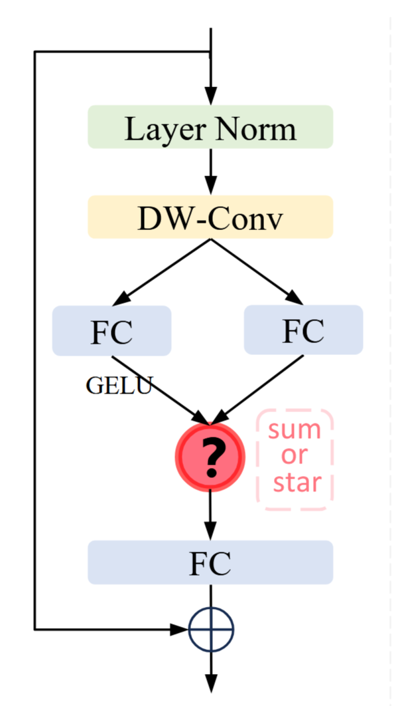

点击或拖拽图片至此区域
支持 JPG, PNG, WEBP (最大 10MB)
🔍 推理结果可视化
✨ 请先启动模型，上传图片并点击检测按钮
启动模型 · 上传图像 · 实时目标检测推理展示
StarBlock + MambaYOLO 前沿技术解读
核心思想：通过简单的元素级乘法（Star Operation），将输入特征映射到极高维的非线性空间，而无需实际增加网络宽度。
核函数视角：星操作等价于多项式核函数，通过跨通道特征对乘，在紧凑的低维空间中计算，却能隐式地实现高维特征表达。
指数级维度增长：多层堆叠时，每层都使隐含维度复杂度呈指数增长，仅需几层即可达到“近似无限”的特征空间。
高效设计：无需复杂注意力机制，在保持低延迟的同时获得强表达能力，特别适合轻量化网络。
核心思想：引入状态空间模型（SSM）替代Transformer的自注意力机制，以线性复杂度实现对长距离依赖的高效建模。
突破二次复杂度瓶颈：传统自注意力复杂度为O(n²)，SSM仅为O(n)，大幅降低计算负担。
RG Block设计：采用多分支门控结构，弥补SSM在局部特征建模和图像定位能力上的不足。
无需预训练：不像Transformer需要在大规模数据集上预训练，MambaYOLO可直接从头训练。
YOLOv8 + StarBlock & MambaYOLO 创新实现与演示平台

修改 YOLO 架构后（如替换 backbone 模块），标准 .pt 文件因结构不匹配无法加载。
该脚本通过层映射表从预训练权重中选择性加载兼容层，然后冻结已加载层，只训练未映射的随机初始化层。
1. 加载映射表 load_mapping("res/mapping/yolov8n_yolov8nmod.json")
从 JSON 读取层对应关系 {pretrained_idx: target_idx}
2. 从 YAML 构建模型 YOLO("ultralytics/cfg/models/yolov8nmod.yaml")
创建 DetectionModel → 所有参数随机初始化
3. 选择性加载权重 build_loaded_state_dict(src_sd, target_sd, mapping)
→ model.model.load_state_dict(loaded_dict, strict=False)
4. 开始训练 model.train(freeze=[冻结层列表], ...)
已映射的层（有预训练权重）冻结，未映射的层参与更新
正常训练结束，模型保存于 runs/train/{model_name}-{timestamp}/
为什么需要映射表： YOLO 模型的 state_dict 中参数名为 model.{层索引}.{子模块}.{参数名}，当目标模型与预训练模型的层结构不同时（如 C2f 换成 StarNetBlock），层索引和参数 shape 都可能变化，需要手动指定对应关系。
路径： res/mapping/{pretrained}_{model}.json
格式： {"pretrained_layer_idx": "target_layer_idx"}
加载函数： script/train_with_frozen.py:33-43
def load_mapping(mapping_path):
mapping = {}
for k, v in raw.items():
sk = int(k.replace("model.", "")) # 统一去除前缀
tv = int(v.replace("model.", ""))
mapping[sk] = tv
return mapping
映射示例（yolov8n_yolov8nmod.json）：
"model.0" → "model.0"
"model.1" → "model.1"
...（第2~7层 全等映射）...
"model.9" → "model.9" // 后续层兼容
"model.10" → "model.10"
"model.8" 未出现在映射表中，所以 yolovn.pt 的第八层不会被加载进模型中，被丢弃。
效果： 映射的层加载预训练权重，未映射的层保持随机初始化
问题： 映射表只存了层索引映射，但 state_dict 中是每个参数张量的独立 key，格式为 model.{层索引}.{子模块}.{参数名}。同一层下可能有 weight、bias、running_mean、running_var 等多个参数。
函数签名： script/train_with_frozen.py:46-68
def build_loaded_state_dict(src_sd, target_sd, mapping):
"""返回 (loaded_dict, mismatches, not_founds)"""
搬运规则：
model.{src_idx}.{sub}.{param} → model.{tgt_idx}.{sub}.{param}
例：预训练 model.8.cv1.conv.weight
若 mapping 中有 8→9，则搬运到 model.9.cv1.conv.weight
处理三种情况：
| 结果 | 含义 | 后续处理 |
|---|---|---|
loaded_dict | 目标 key 存在且 shape 一致 | 加入字典，后续注入模型 |
mismatches | 目标 key 存在但 shape 不匹配 | 打印警告，跳过 |
not_founds | 目标 key 不存在 | 打印警告，跳过 |
注入模型： script/train_with_frozen.py:224
model.model.load_state_dict(loaded_dict, strict=False)
使用 strict=False，只加载匹配的参数，其他参数保持随机初始化。
下面展示从 YAML 构建到正式训练开始的全过程：
YOLO("yolov8nmod.yaml") # 第206行，self.ckpt = None
└─ _new() → DetectionModel(cfg) # 新建模型，随机初始化
└─ self.model = DetectionModel # model 属性指向新建的模型
↓
model.model.load_state_dict(loaded_dict, strict=False) # 第224行，手动注入映射表权重
└─ 此时 self.model 内部已有部分层为预训练权重、部分层为随机初始化
↓
model.ckpt = {"epoch": 0} # 第237行，欺骗 train()
↓
model.train(freeze=[0,1,2,...], ...) # 第258行
└─ Model.train() 检查 self.ckpt # model.py:657
└─ self.ckpt 为 truthy → weights = self.model
└─ DetectionTrainer.get_model( # detect/train.py:86-91
weights=self.model, # 传入已注入权重的模型
cfg=self.model.yaml)
└─ DetectionModel(cfg) # 新建一个 DetectionModel（随机初始化）
└─ if weights: # weights 不为 None
model.load(weights) # tasks.py:243-256
└─ csd = weights.state_dict()
└─ intersect_dicts(csd, target_sd) # 取交集（key+shape都匹配）
└─ load_state_dict(csd, strict=False) # 非严格加载
└─ self.model = self.trainer.model # 替换为训练器中的模型
↓
trainer.train() # 进入实际训练
└─ _setup_train()
└─ _do_train()
传递链中的关键点：手动注入的权重 → self.model → model.load(weights) → intersect_dicts 过滤 → 最终进入训练模型。未映射的层在新建 DetectionModel 时仍为随机初始化。
训练时传入 pretrained=False，防止 ultralytics 再次从 .pt 文件加载权重：
# ultralytics/engine/trainer.py:548-549
elif isinstance(self.args.pretrained, (str, Path)):
weights, _ = attempt_load_one_weight(self.args.pretrained)
False 不是 str 或 Path，所以跳过。避免与已手动注入的权重冲突。
已映射的层（加载了预训练权重）自动冻结，未映射的层（随机初始化）参与训练。
在 train_with_frozen.py 中计算冻结列表： script/train_with_frozen.py:240-242
mapped_tgt_idxs = set(mapping.values()) # 目标模型中被映射的层索引
freeze_list = sorted(mapped_tgt_idxs) # 排序后传给 ultralytics
在 ultralytics 中执行冻结： ultralytics/engine/trainer.py:232-251
freeze_list = self.args.freeze # 接收 [0, 1, 2, 7, ...]
freeze_layer_names = [f"model.{x}." for x in freeze_list] + [".dfl"]
for k, v in self.model.named_parameters():
if any(x in k for x in freeze_layer_names):
v.requires_grad = False # 不计算梯度
效果： requires_grad = False 的参数在反向传播中不产生梯度，也不会出现在 build_optimizer 的 param_groups 中，完全不参与优化器更新。
可训练参数量统计： script/train_with_frozen.py:245-248
learnable_params = sum(
p.numel() for n, p in model.model.named_parameters()
if not any(f"model.{i}." in n for i in freeze_list)
)
conda run -n yolov8 python script/train_with_frozen.py \
--resume staryolon-100 --epochs 150 --lr 1e-4
args.yaml（上次训练保存的全部超参数）
│
├─ 删除不兼容的键：resume、model、save_dir、mode （第128行）
│
├─ CLI 参数覆盖，带键名映射： （第144-163行）
│ --dataset → data（拼接为 yaml 路径）
│ --lr → lr0
│ --resume_freeze → freeze
│ --epochs → epochs（同名直覆盖）
│ --batch → batch（同名直覆盖）
│
├─ 被屏蔽的 CLI 参数：
│ --resume → 跳过（第148行）
│ --pt → 跳过
│ --model → 跳过
│
└─ force 保存路径：
project = runs/train
name = {原名}-{时间戳} ← 避免覆盖上次结果
resume 键被显式删除，model.train(**resume_args) 不带 resume 标志。
model = YOLO("runs/train/staryolon-100/weights/last.pt") # 第172行
model.train(**resume_args) # resume_args 中无 resume 字段
ultralytics 的 check_resume() 不触发（self.args.resume 为假），resume_training() 不执行（self.resume 为 False，ckpt 为 None）。结果是：
保住的：
YOLO(last.pt) 设置了 self.ckpt，model.train() 的 truthy 检查通过，权重正常传递不恢复的（热启动策略）：
start_epoch 从 0 开始build_optimizer 从头创建）ModelEMA(self.model) 从头创建）_setup_scheduler 从头开始）这是有意为之：改变训练参数（lr、epochs、freeze 等）时，旧优化器动量会与新的超参数组合产生干扰，热启动可以避免这一问题。
分三层：
train_with_frozen.py（第 179-283 行）
│ 映射加载 → load_mapping()
│ 权重注入 → build_loaded_state_dict() + load_state_dict()
│ 欺骗 → model.ckpt = {"epoch": 0}
│ 冻结 → model.train(freeze=freeze_list, ...)
│
└─ YOLO() / DetectionTrainer（ultralytics 库）
│ YOLO.__init__ → 构建 DetectionModel
│ DetectionTrainer → 训练管线
│
├─ _setup_train() 训练准备
│ ├─ setup_model() 模型加载
│ ├─ freeze 层设置 requires_grad = False
│ ├─ check_amp() AMP 可用性检测
│ ├─ get_dataloader() DataLoader 构建
│ ├─ build_optimizer() 优化器（AdamW 等）
│ ├─ _setup_scheduler() LR 调度（cosine/linear）
│ ├─ ModelEMA() 滑动平均
│ └─ resume_training() 恢复训练（热启动时不生效）
│
└─ _do_train() 训练循环
├─ torch.amp.autocast 混合精度前向
├─ model(batch) → loss 前向传播 + 损失计算
├─ scaler.scale(loss).backward() 反向传播
├─ scaler.step(optimizer) 参数更新
├─ ema.update(model) 滑动平均更新
└─ scheduler.step() 学习率调整
底层由 PyTorch 自动求导引擎驱动，ultralytics 在其上封装了完整的训练管线，train_with_frozen.py 在其上再叠加了架构变更场景下的选择性权重加载和分层冻结。
消融实验 & 基准对比分析 · 数据实时读取